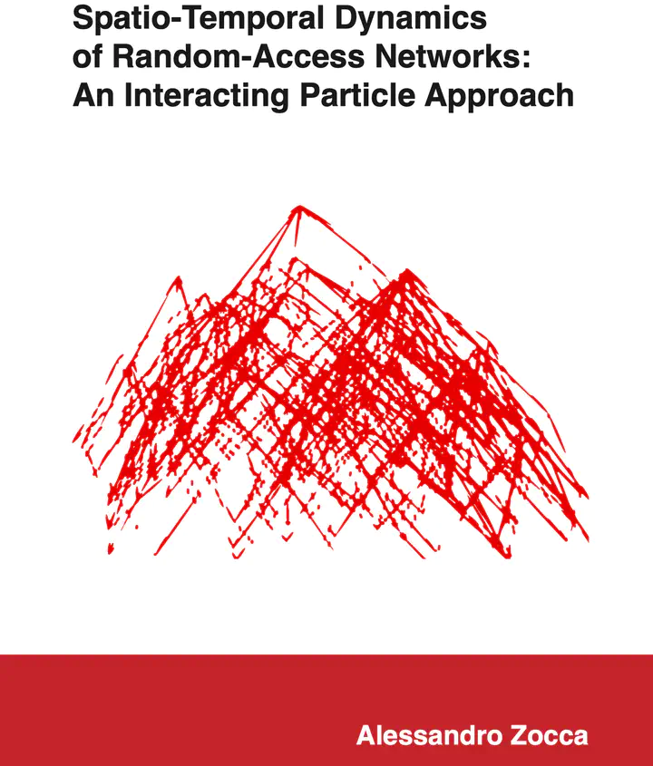

The cover of my PhD thesis, depicting the state space corresponding to a small random-access networkIn this thesis we study mathematical models that capture the collective behavior of devices sharing a wireless medium in a distributed fashion by viewing them as repelling particles. Our research is motivated by fundamental challenges in wireless networks, which typically are very large and lack centralized control. Instead these networks vitally rely on a distributed mechanism for regulating the access of the various devices to the shared medium. Thanks to their low implementation complexity, randomized algorithms provide a popular mechanism for distributed medium-access control. The work in this thesis is particularly concerned with the so-called Carrier-Sense Multiple-Access (CSMA) protocol, various incarnations of which are implemented in IEEE 802.11 networks. Despite its simplicity on a local level, the macroscopic behavior of the CSMA protocol in large networks tends to be exceedingly complex, and critically depends on global spatial characteristics of the network in non-intuitive ways. We consider stylized stochastic models to understand how the spatial deployment of the various transmitter-receiver pairs affects the global performance of the network. Specifically, we model the random-access network as an interacting particle system on a graph, which captures the interplay of conflicting transmissions due to interference. The global evolution of such a particle system is described by a continuous-time Markov process, which exhibits fascinating connections with the hard-core interaction between gas particles studied in chemistry and statistical physics. Specific attention is paid to scenarios in which nodes become more aggressive in trying to activate, which is relevant for networks in high-load regimes, where one cannot afford to leave network resources unutilized. This scenario corresponds to the low-temperature regime for the corresponding interacting particle system. The most likely activity states for the network in this regime are those with a maximum number of active nodes, to which we refer as dominant states. Even in scenarios where all nodes have an equal opportunity to be active in the long run or in symmetric scenarios where spatial fairness is automatically ensured, transient yet significant starvation effects can arise due to the fact that the dominant states become extremely rigid, by which we mean that the transitions between dominant states can be extremely slow, causing starvation for the nodes not in the currently active dominant state.